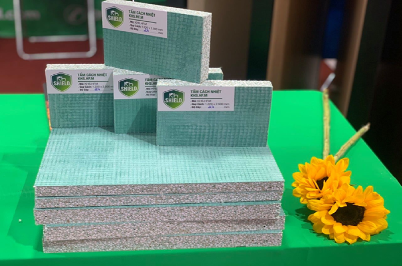

Ưu điểm của tấm chống cháy
Tấm chống cháy FireShieldPro KHS.FA là một trong những sản phẩm nhận được sự quan tâm và yêu thích của khách hàng bởi tính ứng dụng cao, khả năng chịu lửa tuyệt vời, bảo vệ tối ưu cho mọi công trình cũng như mang lại sự yên tâm cho người sử dụng.

Tấm chống cháy FireShieldPro KHS.FA của thương hiệu KH Shield có những ưu điểm quan trọng:
- Không bắt cháy, không khói đen, không độc tố: tấm chống cháy FireShieldPro KHS.FA được thiết kế để không cháy trong điều kiện tiếp xúc với ngọn lửa. Ngoài ra, nó không tạo ra khói đen và không chứa các chất độc hại, giúp bảo vệ sức khỏe con người và môi trường.
- 4 giờ sử dụng khi tiếp xúc lửa 1000 oC: tấm chống cháy FireShieldPro KHS.FA có khả năng chịu nhiệt tốt, cho phép nó hoạt động trong thời gian dài khi tiếp xúc với nhiệt độ cao như 1000 oC trong vòng 4 giờ. Điều này cung cấp thời gian đủ để tiến hành các biện pháp khắc phục trong tình huống cháy nổ.
- Bền vững với môi trường ẩm ướt: tấm chống cháy FireShieldPro KHS.FA có khả năng chống ẩm tốt, không bị ảnh hưởng bởi môi trường ẩm ướt. Điều này làm cho nó phù hợp cho các khu vực có độ ẩm cao và giảm nguy cơ hỏa hoạn do tác động của nước.
- Vật liệu xanh: tấm chống cháy FireShieldPro KHS.FA được chế tạo từ các vật liệu thân thiện với môi trường, không gây ô nhiễm và có khả năng tái chế. Điều này góp phần vào việc bảo vệ môi trường và thúc đẩy sự phát triển bền vững.
- Đạt mọi tiêu chuẩn kiểm định phòng cháy chữa cháy: tấm chống cháy FireShieldPro KHS.FA đã qua kiểm định và đạt đủ các tiêu chuẩn liên quan đến phòng cháy chữa cháy. Điều này đảm bảo rằng nó đáp ứng các yêu cầu kỹ thuật và an toàn cần thiết trong việc ngăn chặn và kiểm soát cháy nổ.
- Thi công thuận tiện: tấm chống cháy FireShieldPro KHS.FA có tính năng thi công dễ dàng và thuận tiện. Với khả năng cắt, uốn và gắn kết linh hoạt, nó có thể được sử dụng trong nhiều kiểu kiến trúc và hệ thống chống cháy khác nhau.
Với những ưu điểm vượt trội và ứng dụng đa dạng của tấm chống cháy FireShieldPro KHS.FA của thương hiệu KH Shield làm cho tấm chống cháy FireShieldPro KHS.FA trở thành một lựa chọn hữu ích và đáng tin cậy trong việc đảm bảo an toàn cháy nổ trong các công trình.